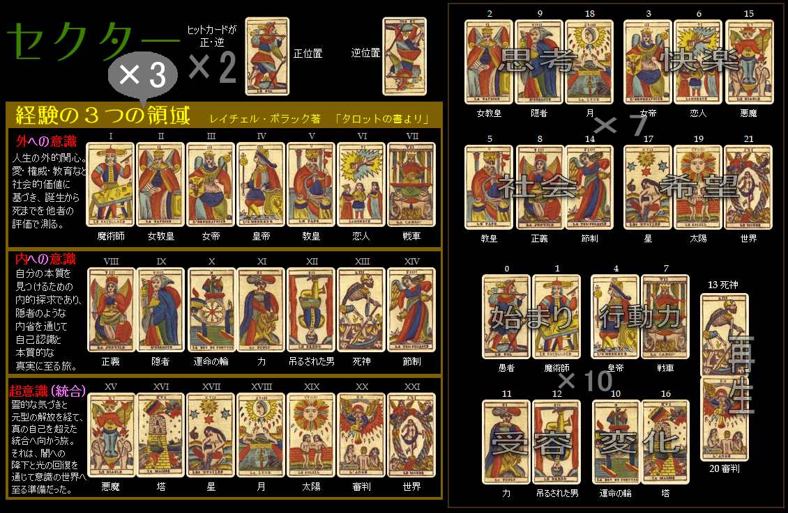

マルセイユタロットの大アルカナ22枚のみでルーレット！ベットしてスピン！ スピン0でゲーム終了。結果をChatGPTに渡し、エンディングはどうなるか！？
セクター表

説明
運命賭博サーガ◆タロットルーレット
【ゲームの流れ】
[シャッフル]ボタンを押す→裏面カードが10枚配られる。この10枚カードのどれか1枚にルーレットがヒットしますので、そのカードを当てるのがねらい。
[カードをめくる]カードは見ても見なくてもいいです。
[ベット]当たると思うセクターにベットします。
[スピン]ボタンを押すと、どれか1枚にヒット。セクターの倍率のポイントを獲得。
再度[シャッフル]ボタンを押す・・・の繰り返し。
1スピンするごとに章が進みます。スピンが0になるとゲーム終了。最終結果によりChatGPTで物語が生成されます。
【カードをめくる】
裏面カードはクリックして何枚でもめくることができます。すべてめくった場合、22枚の大アルカナのうち、場に配られた10枚を事前に知ることができますが、オープンペナとして1枚めくる度に報酬が5%減。10枚全部めくると50%減=半分の報酬になります。めくると、そのカードがヒットした時のセクターに目印のヒントが出ます。
【セクター】
セクターは14種類。正・逆位置セクターはヒットカードの正逆を当てます。それ以外のセクターはセクター表参照。持ちポイント内で何ヶ所でもベットでき、ベット額は1ヶ所100ポイント固定です。ベットしたポイントは消費されます。
【ボーナスイベント】
正位置連続やその他の条件、またはランダムでボーナスイベントがあります。ポイント獲得・倍率アップ・スピン獲得・章進捗2倍などなど。良いことばかりでなく、影の試練も。
シャッフル
リセット
章: 1 | ポイント: 1000 | スピン: 10